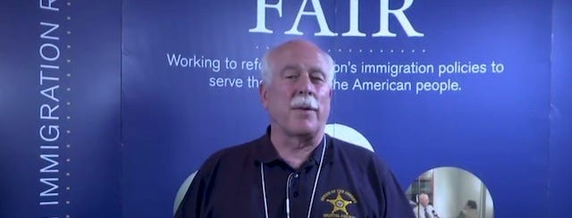

2022-08-11 08:00

If not, he would have resigned from this ugly crew of satin sheets and brown shirts long ago
Bristol County (MA) Sheriff Thomas M. Hodgson has built a career as a cruel jailer on top of allying himself with white supremacists.
In 1999 Hodgson visited Arizona Sheriff Joe Arpaio’s “Tent City” — a facility for Hispanic detainees that Arpaio himself called a “concentration camp,” where inmates lived in 120-degree heat the desert in surplus tents from the Korean War and received half-rations of barely-edible food. Hodgson, who enthusiastically adopted Arpaio’s methods, joked to a Boston Herald reporter, “it’s not a buffet here.” After returning to Massachusetts, Hodgson increasingly modeled his own practices after Arpaio’s and even began using Arpaio’s tag line: “jail is not a country club.” And following the footsteps of Arpaio, who in 2016 lost access to his 287(g) ICE program because of systematic violations of constitutional and human rights of his inmates, Hodgson lost his own 287(g) program in 2021 for all the same reasons — cruelty and incompetence.
After September 11, 2001 Hodgson had realized the financial potential of collaborations with the Department of Homeland Security. With massive amounts of money being thrown around to protect the “Homeland,” Hodgson easily received $3.2 million from DHS to build the C. Carlos Carreiro immigration center in 2007, which later became a full-fledged ICE detention facility. He also received federal money for a $250K DHS command center van — now used primarily for Fourth of July parades and public relations.
In 2011 an organization created by a white supremacist optometrist named John Tanton began recruiting sheriffs to do its dirty work. The 2011 Annual Report of the Federation for American Immigration (FAIR) — which both the Southern Poverty Law Center (SPLC) and the Anti-Defamation League (ADL) regard as a hate group — began using county sheriffs as spokesmen to oppose (and in many cases to flaunt) national and state immigration and gun control laws. Hodgson was one of the first to sign up. Working with a FAIR organizer named Susan Tully who both the SPLC and the ADL had long been monitoring, Hodgson organized a “fact finding” mission to McAllen, Texas in July 2014. Since then Hodgson has attended dozens of FAIR’s conferences and events, including its “Hold their Feet to the Fire” broadcast events that draw speakers from a variety of allied hate groups. In March 2015 Hodgson appeared with Tully at the Fisherman’s Club in New Bedford and he has appeared at most of FAIR’s “Hold their Feet to the Fire” events coordinated by Tully (2016, 2017, 2018, 2019 and 2021).
By 2014 Hodgson was on FAIR’s National Board of Advisors and was “educating” the American Right to the dangers of even DACA recipients. In one of his many trips to Washington DC paid for by Massachusetts taxpayers, on October 11, 2014 Hodgson spoke to fellow FAIR National Board of Advisors on “The Effect of The President’s Decisions on DACA and Its Impact on Our Law Enforcement Challenges.” On September 24, 2016 Hodgson again spoke to FAIR’s National Advisors. The topic this time was “Sanctuary Cities.” Hodgson’s dinner talk immediately preceded one about Jewish “Big Money” and the plot to “Destroy U.S. Borders.” FAIR’s National Board of Advisors is a virtual Who’s Who of conspiracy nuts, anti-Semites, racists, Neo-Confederates, Muslim bashers, white supremacists, eugenicists, and Christian Identitarians.
In October 2015 Hodgson again visited the “Rio Grande” — this time with Robert J. Sylvia, then one of Hodgson’s top brass but now retired, who was all set to run for Sheriff in next month’s election but managed to file his ballot signatures on the wrong form. The sheriffs and their entourage toured the border but also went 70 miles out of their way to visit the ranch of Mike and Linda Vickers, founders of the vigilante group Texas Border Volunteers, an offshoot of the Minuteman Project, a loose-knit group of vigilantes, some of whom are affiliated with White supremacist militias and have been linked to both murders and incidents like the illegal detention of hundreds of migrants in April 2019.
Besides FAIR, Hodgson is also involved with another Tanton group — the Center for Immigration Studies (CIS). SPLC does not categorize CIS as a hate group, but CIS functions as a disinformation and lobbying group with extensive white supremacist and antisemitic links. It is led by Mark Krikorian, who first worked at FAIR and who once said about Haiti: “My guess is that Haiti’s so screwed up because it wasn’t colonized long enough.” The group’s most visible face is Jessica Vaughan, who used the antisemitic newspaper American Free Press, founded by Holocaust denier Willis Carto, to flog CIS talking points — as did Hodgson’s fellow FAIR national advisor Frosty Wooldridge. On March 28, 2017 Hodgson testified with CIS Director of Policy Studies Jessica Vaughan at Border Security and Immigration Enforcement hearings in Washington. He also appeared with Vaughan at a CIS-organized event in Boston the following month, and another in West Roxbury the month after that. In January 2020 Hodgson again appeared with Vaughan (a resident of South Carolina) before the Massachusetts Joint Committee on Public Safety and Homeland Security. FAIR-AVIAC also sent two others to testify before Massachusetts legislators.
In 2015 Hodgson appeared with Dennis Michael Lynch at Ahavath Torah Congregation in Stoughton, Massachusetts, a synagogue run by Islamophobe rabbi Jonathan Hausman. Hausman had previously hosted Dutch Neo-fascist and Islam basher Geert Wilders. Over 100 members of the clergy, including other rabbis, protested a similar hate fest the synagogue hosted the following year featuring Muslim-basher Frank Gaffney and Christian nationalist Jerry Boykin. When I asked Hodgson about his talk with Hausman and Lynch, Hodgson said with a straight face that he was just there doing his duty to inform the public about terrorism: “They asked me to come speak about terrorism. That’s what they asked me to do. […] That’s why I was there, because of my my involvement with the terrorism task force.”
In 2015 Hodgson joined American Family Association’s “governmental affairs director” and FOX News contributor Sandy Rios on her radio show at the U.S. Capitol. Rios claims that secular Jews have been the worst enemy of the country, that “so many of the Jews in this country are atheist” and “sometimes turn out to be the worst enemies of the country.” It was not the first time Hodgson ignored the anti-Semites he was rubbing elbows with. His involvement with the Jew-bashing Tanton group is no aberration. In November 2014 Hodgson appeared on TruNews — the “End Times Newscast” with Rick Wiles, a conspiracy theorist and anti-Semite who claimed that Obama was inspired by Lucifer and killed Supreme Court Justice Scalia as a pagan human sacrifice, that the Irgun has kill teams all over America, and that Jews will use gun control laws to kill Christians. Wiles devoted “the first half of the program to recount several profound prophetic dreams his family received years ago” and the second half to Hodgson, who discussed immigration and his work with FAIR.
In 2016 Hodgson was one of three speakers at a “Patriots Unity Day” rally in Randolph. The second speaker was Jessica Vaughan. The third speaker was Raymond Hanna from the anti-Muslim hate group ACT for America which also maintains white supremacist ties. For example, in Arkansas ACT’s “March Against Shariah” events were organized by a Nazi and publicized on Stormfront. Perhaps because of its far-too-frequent neo-Nazi connections, ACT for America was too toxic for even Donald Trump. Following an article in the Miami Herald announcing ACT’s gala at Mar-a-Lago, which was to have been headlined by Michelle Malkin (another friend of Hodgson’s), the Trump administration had second thoughts: “[The gala] will absolutely not be taking place at Mar-a-Lago,” a spokeswoman for the Trump Organization announced. In September 2016 the sheriff also appeared at a Republican unity rally in Norfolk county attended by his old friend Jessica Vaughan of the Center for Immigration Studies and by ACT for America’s Ray Hannah.
In June 2017 Hodgson appeared with Dan Stein and Michelle Malkin at an annual “Hold Their Feet to the Fire” broadcast with anti-gay bigot Sandy Rios. Malkin has links to white supremacist groups, including several Tanton groups and VDARE, as well as to Islamophobic organizations. Malkin opposes the 14th Amendment, which gave citizenship to slaves. And, of course, Malkin is also a big fan of both John Tanton and The Camp of the Saints, a racist book that has attained almost scriptural reverence among believers in the Great Replacement, a conspiracy theory that maintains that White people are being consciously replaced and outnumbered by immigration sponsored and financed by Liberals and Jews — a view shared by the 18 year-old white supremacist who marched into a Buffalo supermarket in full body armor last May and murdered ten Black people.
In 2018 Hodgson announced with great fanfare that the National Sheriff’s Association (NSA) would be crowdfunding Trump’s wall. But Hodgson’s NSA project folded after raising less than $100K in three months — despite a false claim that excessive web traffic had crashed the site. The NSA site redirected donors to a group called the American Border Foundation, whose Director of Communications was Jeremy Messina, who identifies with the white Nationalist Identitarian movement and whose Facebook postings bore striking similarities with the Buffalo shooter’s manifesto. The American Border Foundation’s crowdfunding scheme never reached its $450 million goal. During its three-year run, ABF’s less-than 4,000 donors raised barely over $227K. The fund’s managing director, Quentin Kramer — who like Hodgson has ties to FAIR through FAIR’s sister organization AVIAC — went on the conspiracy and white supremacist circuit trying to sell the project. For example, Kramer appeared on the far-right Southern Sense podcast and also on an “anti-federalist” program that frequently invokes Article IV, Sec. 4, Clause 2 of the Constitution (“the United States shall guarantee to every State in this Union a Republican Form of Government, and shall protect each of them against Invasion…”).
Despite lackluster donations, Hodgson claimed that as a sheriff he could cut through the red tape to ensure donations got to the Department of Homeland Security and that the wall would be built. In November of 2018, Hodgson claimed he had submitted a form to DHS to donate $100,000 to pay for “border barriers on the Southern border.” But DHS informed the American Border Foundation it could not accept their donation. Nevertheless, in 2019 Hodgson and Kramer were still acting as if the crowdfunding effort was still viable. Both spoke at a FAIR-AVIAC-sponsored press conference in Washington, whose main function was to highlight the “Angel Families” who had lost family members to auto accidents or crimes committed by undocumented migrants. As of today, the whereabouts of $227,657 in ABF donations are still unaccounted for. Neither the ABF nor Hodgson has ever responded to information requests from Bristol County for Correctional Justice or American Oversight.
Hodgson’s newest project is Protect America Now. Once again, Hodgson is not just a member: he’s on Protect America Now’s national advisory board.
On the surface, PAN’s leadership looks like another collection of uber-patriotic, God- and gun-waving Constitutional sheriffs. PAN members number about 85 far-right sheriffs, some with Oathkeeper affiliations. But the brains behind PAN is Nathan Sproul, a GOP operative and acolyte of Karl Rove, long involved with numerous voter suppression efforts. A while ago I looked into Sproul and Kory Langhofer, a Trump Stop the Steal lawyer accused of ethics violations, who is also involved with PAN and other voter suppression efforts, and is not coincidentally the owner of Signafide, a company whose AI software is intended to challenge ballot signatures.
The Institute for Research and Education on Human Rights (IREHR) connects Protect America Now, the Constitutional Sheriffs Association (CSPOA), and TrueTheVote in resurrecting Trump’s plan to have sheriffs intervene in the next election. And by “intervene” we’re talking about sheriffs seizing voting machines.
Besides his leadership role in PAN, Hodgson is also a member of CSPOA; in 2014 his membership dues were recorded by the Massachusetts Office of Campaign and Political Finance.
In June, PAN spokesman, Pinal County (AZ) Sheriff Mark Lamb, announced the creation of an “election integrity” project that will funnel reports (no doubt as ridiculous as those from Rudy Guiliani and Sydney Powell) to sheriffs for “quick evaluation of incoming information.” And at the FreedomFest 2022 conference in Las Vegas CSPOA founder Richard Mack announced that sheriffs would seize voting machines. Lamb, Hodgson’s fellow advisor at Protect America Now, recently teamed up with True the Vote’s Catherine Engelbrecht, who was already working with the CSPOA. Lamb has promised to investigate so-called “ballot mules” — a reference to the Big Lie movie “2000 Mules” by Dinesh D’Souza, who was convicted on felony charges of using “straw donors” to make illegal campaign donations but was later pardoned by Donald Trump.
This is the world Hodgson not only lives in but has chosen to create. Whether Hodgson himself is a white supremacist — or has simply built a career by supporting white supremacists for decades — is a trivial distinction.
Hodgson is either a monster or a fool. In neither case does he deserve to be returned to his job as Bristol County Sheriff.
Bristol County Sheriff Thomas Hodgson is a member of the National Board of Advisors of the Federation for American Immigration Reform. FAIR was founded by John Tanton, a white supremacist, and a majority of its advisory board are also white supremacists, Islamophobes, homophobes, racists, and conspiracy theorists. Here are a few of the people Hodgson rubs elbows with at board meetings:
Lou Barletta, former mayor of Hazelton, PA who signed anti-immigration legislation in 2006 that was declared illegal a year later;
Sharon Barnes, clearly no DACA lover, who wrote: “It is our country. They and their parents need to be kicked out […] strengthen our laws and get rid of the locusts;”
Gerda Bikales, who regards Spanish as a ghetto language: “I don’t think Yiddish or Italian represented a threat to the union. But we are now setting ourselves up for an entrenched language ghetto;”
William Chip, who wants to repeal the 14th Amendment;
Donald A.Collins, who contributes to the white nationalist journal VDARE;
Dino Drudi, another Massachusetts zealot who has written for VDARE;
Don Feder, a Muslim-basher who thinks US troops should have “shoot-to-kill” orders on the Southern border;
Robert Gillespie, a proponent of population control — not for white Christians but in developing countries;
Joseph Guzzardi, a member of VDARE’s “editorial collective;”
Carol Joyal, who wrote a review of The Camp of the Saints calling it a “prophecy” of Third World destruction of the West while everyone else just called it racist;
Richard Lamm, former Colorado governor who said that “new cultures” in the U.S. are “diluting what we are and who we are;”
K.C. McAlpin, an Islamophobe who wants to ban Muslims for ideological reasons: “Congress has used that power in the past to ban the immigration of Communist Party and National Socialist (Nazi) party members who were deemed to be threats to our national security. This case is no different;”
Scott McConnell, another VDARE author, Executive Director at Lifeway Research (“be ready when homosexuality devastates”), and a member of the Family Research Council;
Paul Nachman, a Montana white supremacist who writes for VDARE who calls refugees “good liars” and questions the existence of “moderate Muslims;”
Robert D. Park, founder of the “Article IV - Section 4 Foundation,” a group which maintains that government has abdicated its responsibility to uphold a Constitutional clause requiring it to defend the U.S. from “invasion;”
Randy Pullen, former chairman of the Arizona GOP and self-appointed expert on black crime: “Yes black lives matter. The best way to end the slaughter of young black men is to take guns away from blacks as they are the main killers;”
John Philip Sousa IV, great grandson of the famous Sousa, a Birther, and friend of Joe Arpaio;
Alan N. Weeden, whose family owns the Weeden Foundation, major donor to white supremacist initiatives, and proponent of Secure ID, a national identification system.